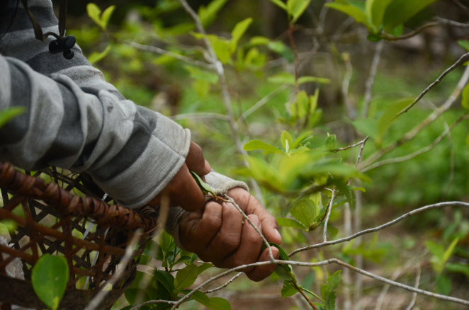

Él cree que su hija acabará haciéndose cargo del negocio. Es una ideología, dice. Así
como él siguió los pasos de su padre, ella seguirá los suyos. Su padre transportaba pasta base de
cocaína. Ahora Jeremías la fabrica y su hija lo ayuda evitando sospechas y ocultando el dinero.
“Una vez, cuando regresábamos a casa (después) de dejar los paquetes, tenía que traer
más de 100.000 reales (la moneda brasileña) en efectivo”, recuerda.
“Casi todo era para pagar a los ‘raspachos’ (recolectores de coca) y comprar insumos
para la siguiente campaña. Ella me ayudó también. Los traía pegados (a su cuerpo). ¿Quién va a decir
algo ahí?”, dice y sonríe, aunque es difícil saber si es por nervios o cinismo.
Él cree que su hija acabará haciéndose cargo del negocio. Es una ideología, dice. Así
como él siguió los pasos de su padre, ella seguirá los suyos. Su padre transportaba pasta base de
cocaína. Ahora Jeremías la fabrica y su hija lo ayuda evitando sospechas y ocultando el dinero.
Jeremías y otros como él en Mariscal Ramón Castilla son los primeros eslabones de una
cadena de producción de drogas que se extiende desde los campos de coca –la planta cuyas hojas
proporcionan el ingrediente activo de la cocaína– hasta los laboratorios clandestinos cercanos, ubicados
a lo largo del río Amazonas hasta la triple frontera, y luego, por río o aire, llega a ciudades de la
costa atlántica de Brasil y a consumidores en Europa.
Gran parte de las drogas ilícitas producidas en Perú se envían a través de
Tabatinga, una ciudad
brasileña a orillas del río Amazonas, en la triple frontera compartida por Perú, Brasil y Colombia.|
Bram Ebus
Jeremías es un jefe local del narcotráfico. Tiene sus propios cultivos de coca y
supervisa los campos en las fincas de otras personas. Coordina el procesamiento de hojas de coca para
convertirlas en pasta base de cocaína, que luego será refinada para transformarse en clorhidrato de
cocaína. Él y las personas que lo rodean –quienes pasan el día recogiendo hojas de coca en el calor
tropical y quienes mezclan las hojas con productos químicos tóxicos para producir la pasta– se
encuentran entre los trabajadores peor pagados en la industria de las drogas ilegales.
Además de cultivar coca y fabricar pasta base, Jeremías solía transportar la mercancía a
la triple frontera. Luego llegó la tercerización o contratación externa del tráfico de drogas en esta
parte de la Amazonía. Ahora, intermediarios de Colombia se encargan de la logística, recogen la droga de
las fincas y le ahorran el largo y posiblemente peligroso viaje a Tabatinga.
Jeremías, de treinta y tantos años, es un hombre de familia con porte militar, que rara
vez tutea a las personas. No es un hombre de pocas palabras, pero su forma pausada de hablar le da al
oyente la sensación de que lo fuera. Si hubiera podido elegir, dice, habría sido soldado porque le
gustan las armas.
LA EXPANSIÓN DE LA COCA SUPERA LA ERRADICACIÓN
Mariscal Ramón Castilla ha sido durante mucho tiempo una tierra de indígenas, donde es
predominante la presencia de los pueblos Ticuna, Yagua y Bora. Hasta la década de los noventa era solo
un punto de tránsito para las drogas que se dirigían a la triple frontera. La fuente del ansiado polvo
blanco estaba más hacia el oeste, en las laderas de las montañas de los Andes, muy alejada de la llanura
inundable. Las tierras bajas de la Amazonía eran un lugar poco atractivo para actividades agrícolas,
pero tenían un enorme potencial estratégico por su ubicación.
Más de 20 años después,
8.613 HECTÁREAS DE SELVA HAN SIDO REEMPLAZADAS POR CULTIVOS DE COCA
DESTINADOS AL TRÁFICO ILÍCITO DE DROGAS
Según la Comisión Nacional para el Desarrollo y la Vida sin Drogas (DEVIDA),
entidad encargada de la
política antidrogas de Perú

Aunque Colombia es el mayor productor de coca, Perú tiene más cultivos en la cuenca del
Amazonas que cualquier otro país, según un informe de 2023 de la Oficina de las Naciones Unidas contra
la Droga y el Delito (UNODC). Perú se ubica segundo en la producción de cocaína, solo después de
Colombia.
Según Carlos Figueroa Henostroza, presidente ejecutivo de DEVIDA, la
producción estimada en 2022 fue de
870 TONELADAS, 304 MÁS QUE EN 2020,
cuando se publicó el último informe sobre la producción potencial
de cocaína.
Esas cifras contrastan fuertemente con el área de coca eliminada por el Proyecto
Especial para el Control y Reducción de Cultivos Ilegales en el Alto Huallaga (CORAH), responsable de
erradicar los cultivos de coca en Perú. Según datos oficiales, la última vez que se realizaron
operativos para eliminar sembríos ilícitos en Mariscal Ramón Castillo fue en 2019, cuando se erradicaron
7.784 hectáreas de plantas. Ese esfuerzo se centró en la provincia de Pebas, que limita con Mariscal
Ramón Castillo, río arriba de la triple frontera y a la que solo se puede llegar vía fluvial.
En lo que va del año, funcionarios del gobierno reportan casi 5.000 hectáreas de
cultivos ilícitos erradicados, solo en las regiones de Ucayali, Huánuco y San Martín. En diciembre de
2022, el CORAH estableció una base de operaciones en Mariscal Ramón Castillo, lo que generó tanto
expectativas como temor entre la población. En junio, sin embargo, la base estaba desocupada. El
Ministerio del Interior no respondió a reiteradas consultas para hablar del tema.
Una mujer entre arbustos de coca en un campo en la provincia Mariscal Ramón
Castilla, en la región peruana de Loreto, donde la producción de coca se ha expandido en los últimos
años. | Pamela Huerta
Julio César Vela Utor, un general retirado de la Policía Nacional y director ejecutivo
de CORAH, afirma que la erradicación depende de una estrategia de múltiples agencias que se enfoca
principalmente en áreas donde se garantiza la seguridad del equipo de erradicación y existen
posibilidades de desarrollo alternativo para la población.
Sin embargo, a eso se suman las limitaciones presupuestarias que hacen imposible cumplir
con los objetivos anuales de eliminación de los cultivos.
Para alcanzar la meta de erradicación anual de CORAH de 25.000 hectáreas e inspeccionar
todas las áreas fronterizas remotas y difíciles, la agencia necesitaría entre US$47 millones y US$50
millones al año, dice Vela Utor. Sin embargo, en los últimos tres años, el presupuesto anual de la
agencia ha sido apenas la mitad de esos montos.
LOS ESLABONES MÁS POBRES DE LA CADENA DE LAS DROGAS
Jeremías tiene más de una docena de hectáreas (aproximadamente media milla cuadrada) de
cultivos de coca propios en Mariscal Ramón Castillo; alquila algunas más, supervisa la cosecha en campos
que pertenecen a “amigos” y compra hoja de coca a otros campesinos. Todo es destinado a producir pasta
base en su laboratorio. Ese grado de control sobre la producción, lo convierte en un patrón o jefe local
de tráfico, título que parece ostentoso para un hombre que ha logrado construir su casa poco a poco
durante cuatro años.
En la cadena de producción de la droga, el patrón es la persona que proporciona la pasta
base o cocaína a intermediarios, a una fracción del precio que la droga acabará alcanzando en las calles
de una ciudad de los Estados Unidos o Europa. Los jefes locales como Jeremías están a merced del
mercado, y en el submundo económico, ese mercado no se autorregula. Eso hace que los patrones peruanos y
la mano de obra que contratan sean los eslabones más pobres de la cadena del narcotráfico.
Los precios los fijan los compradores, que en la triple frontera suelen pertenecer a la
organización criminal
que domina el comercio en Tabatinga. Desde 2020, según la policía antidrogas peruana, un grupo conocido
como
Os Crias, en portugués, o Los Niños, en español, tiene el control en esa región. El surgimiento
de
Os Crias fue el resultado de una sangrienta disputa por el control territorial de la triple
frontera entre el Comando Vermelho (CV), la Família do Norte (FdN) y el Primeiro
Comando da Capital (PCC), tres de las principales organizaciones criminales de Brasil. Reacios
a
compartir el tráfico de drogas en esa zona se debilitaron mutuamente. Los disidentes de los tres grupos
se
unieron y tomaron el control, dejando de lado sus viejas lealtades y formando una organización criminal
que
atiende al mejor postor. Por ahora han acaparado el mercado de la droga que llega desde puntos de acopio
en
la provincia Mariscal Ramón Castilla.
Uno de esos puntos es Caballococha, la ciudad más grande de Mariscal Ramón Castillo, que
tiene algunas calles de tiendas y un puerto inacabado y dominado por una estatua de un caballo blanco.
Sentado en la plaza, un domingo por la mañana, Jeremías está impaciente por comenzar la próxima
producción. Planea regresar por la tarde a la comunidad donde vive con su familia y donde ha operado su
negocio durante los últimos 14 años. Es un viaje de cuatro horas en una embarcación de madera con un
pequeño motor. Debe salir rápido para llegar antes del anochecer.
En los últimos meses Jeremías ha diversificado su negocio y no por casualidad. Además de
las gaseosas y la cerveza que vendía hace seis meses ahora también vende gasolina, que usa no solo para
las embarcaciones a motor, sino para extraer el alcaloide de la hoja de coca y obtener la pasta base,
que luego se refina para conseguir cocaína.
Jeremías también tiene un nuevo capataz, un colombiano de 51 años de buen carácter, que
dice se fue de su país porque el gobierno no lo dejó cultivar coca en paz. Durante la cosecha trabajará
codo a codo con un escuadrón de “raspachines”, o recolectores, a quienes se les pagará entre US$0,21 y
US$0,27 por kilo (2,2 libras) de coca recogida. Un productor puede reunir hasta 150 kilos (330 libras)
trabajando hasta 15 horas al día. Muchos de ellos tienen las manos tan callosas que ya no sienten dolor
con el trabajo.
Carmelo*, de 18 años, comenzó a cosechar coca cuando tenía 16. No terminó la escuela
primaria y no tiene expectativas sobre su futuro. No sabe qué le hubiera gustado ser o hacer, y mucho
menos es consciente de que aún tiene tiempo para decidir. Lo que sí sabe es cuánto le duelen las
ampollas en los dedos, después de recoger tantos sacos de hojas de coca, y lo que se siente al
enfermarse por el cansancio o por la picadura de un insecto.
También sabe que podría haber terminado al menos una vez en la cárcel, pero pudo escapar
de la policía antidrogas. “Nos hicieron correr, bombardeaban los laboratorios. Yo me escapé. Nos
garrotean y nos mandan a Iquitos”, relata anecdóticamente.
Los campos de coca se encuentran a cierta distancia de la comunidad, a lo largo de un sendero de
lodo, a través de la maleza | Pamela Huerta
El camino hacia el campo de Jeremías es fangoso, con vegetación dispersa porque el
bosque ha sido talado para expandir los cultivos ilícitos. Sin cobertura arbórea, la temperatura es
infernal. Jeremías luce una camiseta sintética de fútbol, del Boca Juniors, con el número 17 a la
espalda, el número del jugador peruano Luis Advíncula. Como la mayoría de los campesinos de la Amazonía,
siempre tiene un machete en la mano.
En el recorrido Jeremías señala el laboratorio donde procesa las hojas y lamenta que
este año no pueda contratar a un químico para que se encargue de hacer la pasta base. No se refiere
necesariamente a un químico profesional, sino a uno que ha aprendido el oficio de forma empírica. Este
año, dice, no puede pagar uno porque el aumento en los precios de los fertilizantes ha superado su
presupuesto.
NO PREGUNTES, NO CUENTES
Además de Tabatinga, en Brasil, hay otros puntos importantes donde los compradores
almacenan drogas, incluidos los pueblos colombianos de Leticia, que colinda con Tabatinga en la triple
frontera, y Puerto Nariño, ligeramente río abajo de Caballococha y al otro lado del río Amazonas. En
Perú está Santa Rosa, una isla frente a Tabatinga y Leticia, y la comunidad indígena de Bellavista
Callarú, ubicada aproximadamente a medio camino entre Caballococha y la frontera.
Bellavista está cada vez más controlada por grupos de narcotraficantes. Es una comunidad
a orillas del río Callarú que solo es navegable en temporada de lluvias, y donde el fútbol es la
actividad favorita tanto de hombres como de mujeres. Desde la plaza –una zona cubierta de vegetación con
algunas escaleras y arcos– hay una vista de espectaculares atardeceres amazónicos, una belleza que
contrasta con la imagen de forasteros armados bebiendo cerveza hasta desmayar.

Los recolectores de hojas de coca trabajan de 12 a 15 horas al día en el calor tropical, ganando
alrededor de US$0,25 por kilo (2,2 libras) de coca recolectada. | Alex Rufino
Los extraños que entran en la comunidad son perseguidos y acosados con preguntas
intimidatorias. También reina el silencio. El 21 de marzo una joven víctima de explotación sexual fue
asesinada y nadie dijo nada, cuenta un habitante que pidió no ser identificado. La gente sabe quién la
mató, pero nadie dirá nada porque “eso pasa cuando le juegan chueco al patrón”, dice.
La coca es la única ley. El 15 de junio se transmitió un anuncio por los parlantes de la
comunidad en español y en ticuna, idioma indígena local: “Se comunica a todas las personas que desean ir
a la ‘raspa’ (recoger coca) de Lucho…”.
Escenas como esta no son inusuales. Tampoco lo es la explotación de menores, según un
curaca o líder de una comunidad indígena del lado colombiano del río, quien dice que lo han amenazado
debido a sus esfuerzos por alertar a los miembros de la comunidad sobre los riesgos de dejar que los
jóvenes vayan a trabajar en los campos de coca en Perú.
Los hombres son llevados a los cultivos y las mujeres a los bares, dice el líder. “No
vayas a dejar ir más a las muchachas; las cogen, tienen relaciones con ellas y las rifan”, cuenta que
les advierte a los padres que tienen hijas mayores de 11 años. Al curaca también le preocupa el
creciente problema del consumo de drogas entre los jóvenes, que, atraídos a recoger coca con ofertas de
dinero, a menudo cobran en pasta base de coca, que luego venden en la comunidad.
El conocimiento que los narcotraficantes en Colombia han adquirido a lo largo de los años es muy
valorado en Perú, según el coronel Carlos Urquijo Gómez, segundo comandante de la Brigada de Selva No.
26 en Leticia, Colombia.
Mario* es del Meta, Colombia, una zona que durante años fue escenario de conflicto entre guerrilleros y
paramilitares. Dice que quien se involucra en este trabajo es porque quiere dinero fácil. Él lo dejó por
esa razón, y también por miedo, porque descubrió cómo mataron a su mejor amigo. Antes de la pandemia,
transportaba droga de Puerto Nariño a Tabatinga, la primera etapa de una ruta que conduce a la costa
atlántica y luego a los mercados internacionales. Contrabandeaba pasta base y siempre llevaba un
revólver.
“Yo transportaba la droga entre yuca o plátano; otras veces en bidones de combustible”, dice Mario,
mientras observa a un soldado armado que entra a la tienda donde está hablando. Él transportaba
cantidades pequeñas, entre 10 y 20 kilogramos (22 a 44 libras), que le podían dejar ganancias de
alrededor de US$200, una vez deducidos los costos de viaje. Siempre tuvo miedo, especialmente de la
Policía Federal de Brasil. Sin embargo, dice, “el comercio ahí se mueve libremente”.
Soldados colombianos patrullan el río Amazonas, cerca de Leticia, en la triple frontera que
comparten Colombia, Brasil y Perú. | Bram Ebus
En Tabatinga, un kilo de pasta base de cocaína puede costar hasta US$1.000 y un kilo de cocaína entre
US$2.500 y US$3.000. Todo depende de la calidad del producto, de las condiciones de seguridad y de una
serie de factores relacionados con el “aquí y ahora”. Desde Tabatinga, la droga va a Manaus, Brasil, la
ciudad más grande de la Amazonía, y el principal punto de acopio de las organizaciones criminales de ese
país, que se encargan de la distribución nacional y el envío a los puertos costeros.
Estas dinámicas hacen que el área alrededor de la triple frontera sea extremadamente violenta, con un aumento exponencial de casos de sicariato, tráfico de personas y otras actividades criminales. Las estadísticas de la Policía colombiana muestran un importante aumento de los asesinatos en Leticia, de 7 en 2020, a 27 en 2022, en una ciudad de unas 33.000 personas.El Informe Mundial sobre Drogas en 2023, de la Oficina de las Naciones Unidas contra la Droga y el Delito (UNODC), continúa mostrando a Brasil como el mayor consumidor de drogas en América del Sur. Los puertos brasileños sobre el Atlántico también son una puerta para exportar cocaína a Europa, Asia oriental y la parte sur de África. En esos mercados, un kilo de cocaína puede costar hasta US$80.000.
OPTIMIZANDO EL NEGOCIO